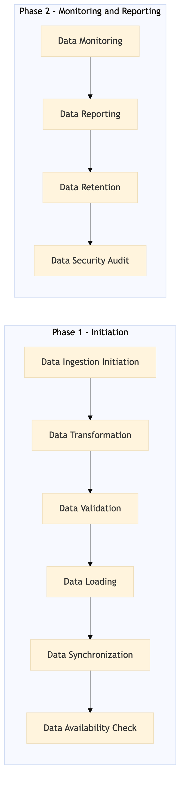

This process document outlines the ingestion of airline ancillary content, including bags and seat upgrades, from various OTA systems into Expedia Group's inventory management system.
| Trigger | Receiving updated ancillary content data from airlines via integration partners. |
| Outcome | Successfully ingested and processed ancillary content data, making it available for booking and display in Expedia Group's platforms. |
| Systems | AWS SageMaker Kafka Snowflake Expedia Open World Partner Central Amadeus NDC Sabre GDS Travelport EVC One Key TravelAds Tableau Salesforce |

Click to enlarge
| Step | Name & Pain Point | Role | System | Input | Output | KPI | Flags |
|---|---|---|---|---|---|---|---|
| 1.1 | Data Ingestion Initiation Handling large volumes of data efficiently | Integration Engineer | AWS SageMaker, Kafka | Ancillary content data from airlines | Ingested data into AWS SageMaker for processing | 95% successful ingestion rate | ⚠ Exception |
| 1.2 | Data Transformation Data schema inconsistencies | Data Engineer | AWS SageMaker, Snowflake | Ingested ancillary content data | Transformed and standardized data for integration | 90% successful transformation rate | ⚠ Exception |
| 1.3 | Data Validation Identifying and resolving data anomalies | Quality Assurance Engineer | Snowflake, Tableau | Transformed data | Validated data with no errors | 98% successful validation rate | ◆ Decision⚠ Exception |
| 1.4 | Data Loading Handling database capacity and performance | Database Administrator | Snowflake, Expedia Open World, Partner Central | Validated ancillary content data | Loaded data into Expedia Group's inventory systems | 95% successful load rate | ⚠ Exception |
| 1.5 | Data Synchronization Ensuring real-time data consistency | Integration Engineer | Snowflake, Amadeus NDC, Sabre GDS, Travelport, EVC, One Key, TravelAds | Loaded ancillary content data | Synchronized data across all OTA systems | 90% successful synchronization rate | ⚠ Exception |
| 1.6 | Data Availability Check Ensuring seamless user experience | Product Manager | Expedia Open World, Partner Central | Synchronized ancillary content data | Verified data availability for booking and display | 98% successful availability rate | ◆ Decision⚠ Exception |
| 1.7 | Data Monitoring Real-time monitoring and alerting | Operations Engineer | Snowflake, AWS SageMaker, Kafka | Ingested and processed ancillary content data | Continuous monitoring of data ingestion and processing pipelines | 95% successful monitoring rate | ⚠ Exception |
| 1.8 | Data Reporting Generating actionable insights | Business Analyst | Tableau, Salesforce | Monitored ancillary content data | Generated reports on ingestion and processing performance | 90% successful report generation rate | ⚠ Exception |
| 1.9 | Data Retention Managing storage costs and performance | Database Administrator | Snowflake | Processed ancillary content data | Archived and retained data for compliance and analytics | 98% successful retention rate | ⚠ Exception |
| 1.10 | Data Security Audit Protecting sensitive customer information | Security Engineer | Snowflake, AWS SageMaker, Kafka | Ingested and processed ancillary content data | Conducted security audits to ensure data integrity and privacy | 95% successful audit rate | ◆ Decision⚠ Exception |